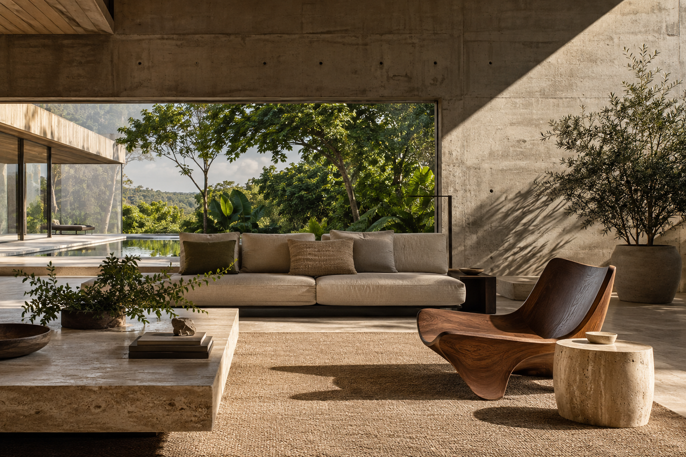

O ponto de partida
é a sua rotina.
Desejos, prioridades, terreno e orçamento. Organizamos o que importa antes do primeiro traço.
Casas com intenção. Espaços que acolhem.
Arquitetura que começa em você.

Uma seleção de espaços pensados para aproximar a vida de dentro do mundo lá fora.
Antes de desenhar um espaço, queremos conhecer quem vai habitá-lo.
Combinamos clareza, sensibilidade e atenção aos materiais. Cada escolha responde à sua rotina, ao lugar e ao que faz sentido permanecer.
Vamos desenhar juntosDesejos, prioridades, terreno e orçamento. Organizamos o que importa antes do primeiro traço.
Estudamos os espaços, refinamos os materiais e apresentamos escolhas que você consegue visualizar.
Orientação ao longo da execução, com decisões documentadas e atenção à intenção do projeto.
Conte um pouco sobre o que você imagina. O primeiro passo é uma boa conversa.
Formulário demonstrativo. Nenhum dado será enviado.